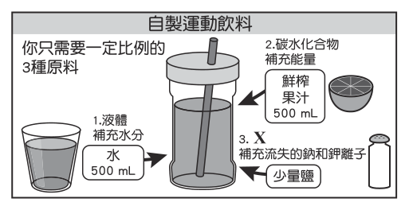

國中教育會考自然歷屆試題
開卷有益收錄國中教育會考「自然」民國 111–115 年的歷屆試題，共 5 份考卷、250 題，其中 250 題附有逐題詳解。每一份考卷都有獨立頁面，可以整卷看題目與答案，也可以直接線上作答。
線上練習 自然 →
本科概況
| 科目 | 自然（國中教育會考） |
|---|
| 題數 | 250 題 |
|---|
| 考卷份數 | 5 份 |
|---|
| 涵蓋年份 | 民國 111–115 年 |
|---|
| 詳解 | 250 題（100%） |
|---|
| 資料來源 | 心測中心 會考歷屆試題（依著作權法 §9，考試試題不受著作權保護） |
|---|
| 費用 | 免費，不需註冊，無廣告 |
|---|
生物、理化、地科綜合，重實驗與圖表判讀。
歷年考卷（5 份）
點任一年度可看整份試題與標準答案。
題目長什麼樣
以下自本科題庫抽 5 題示例，完整題目請看上方各年度考卷。
第 1 題
小翔將上皿天平靜置於水平桌面上，發現天平的指針靜止時偏向左邊，便進行歸零的動作。已知天平歸零後，指針靜止時指在中央的刻度上，則小翔所作的歸零動作最可能為下列何者？
- （A）將左邊的校準螺絲向內旋入
- （B）將兩端的校準螺絲均向內旋緊
- （C）在左邊的秤盤上放上一張秤量紙
- （D）使用砝碼夾將指針撥往中央的刻度
答案：（A）
詳解與考點
正解：題眼是「指針靜止時偏向左邊」，代表橫樑左端偏重。歸零要用兩端的校準螺絲改變配重位置：把左邊螺絲向內旋入，該側配重內移、力臂縮短，左端力矩減小，指針就回到中央刻度，故 A 為正解。
B：兩端螺絲同時向內旋入，左右力矩一起減小，原本左重右輕的差距並未改變，指針仍偏左。
C：在左盤放秤量紙會讓左端更重，偏向反而加劇；且歸零必須在空盤狀態下完成，秤量紙是秤量階段的措施。
D：用砝碼夾撥動指針只是移動指示器，橫樑的重量分布沒變，放手後指針仍會偏回左邊。
本題考點：上皿天平歸零——空盤靜置後以兩端校準螺絲調整橫樑左右力矩，使指針停在中央刻度；判準——哪一端偏重就把哪一端的螺絲向內旋入以縮短該側力臂；秤量紙、砝碼、手撥指針都不是歸零手段。
第 1 題
孕婦產檢時常使用超聲波來檢查腹中胎兒的生長情形，當醫生使用超聲波進行檢查時，孕婦對超聲波的聽覺感受，下列說明何者最合理？
- （A）孕婦會聽見低沉的轟隆聲
- （B）孕婦會聽見尖銳刺耳的聲音
- （C）因頻率過高，故孕婦聽不見超聲波
- （D）因波速過快，故孕婦聽不見超聲波 ※ 超聲波亦稱作超音波
答案：（C）
詳解與考點
正解：題幹的「超聲波」頻率高於人耳聽覺上限。人耳可聽聲音的頻率約為20 Hz至20000 Hz，超聲波頻率高於20000 Hz，因此孕婦聽不見，C 為正解。
A：低沉的轟隆聲屬低頻可聽聲，與超聲波頻率過高不符，錯誤。
B：尖銳刺耳的聲音雖頻率較高，仍須落在人耳可聽範圍內，錯誤。
D：能否聽見主要由頻率是否落在聽覺範圍決定，不是因為波速過快，錯誤。
本題考點：人耳聽覺範圍——約20 Hz至20000 Hz；超聲波——頻率高於20000 Hz，超出人耳可聽範圍。
第 1 題
戰場上士兵為了避免被敵軍瞄準，通常不會以直線前進，而會以之字形的路線前進。圖(一)實線表示直線的甲路線，虛線表示之字形的乙路線，由X點移動至Y點採用甲、乙兩種不同路線的位移與路徑長關係，下列何者正確？

- （A）位移大小：甲＝乙；路徑長：甲＝乙
- （B）位移大小：甲＝乙；路徑長：甲＜乙
- （C）位移大小：甲＜乙；路徑長：甲＝乙
- （D）位移大小：甲＜乙；路徑長：甲＜乙
答案：（B）
詳解與考點
正解：題幹比較甲、乙兩種走法，關鍵是分辨位移與路徑長。位移只看起點 X 到終點 Y 的直線距離與方向，甲、乙起終點相同，所以位移大小相等。路徑長是實際走過軌跡的總長，乙為之字形來回繞行，比甲的直線路徑長，故路徑長甲＜乙。因此「位移甲＝乙、路徑長甲＜乙」，B 為正解。
A：誤把位移或路徑長判為相等，未區分直線位移與實際路程，故錯誤。
C：同樣混淆位移與路徑長，故錯誤。
D：誤認直線路線的位移較小；位移只由共同的起終點決定，故錯誤。
本題考點：位移——由起點到終點的直線距離與方向；路徑長——實際行走軌跡的總長；判準——起終點相同則位移相同，繞行較多則路徑長較大。
第 3 題
圖(二)為自製運動飲料的成分說明圖，圖中X 所指應為下列何類物質？

- （A）醣類
- （B）有機酸
- （C）蛋白質
- （D）電解質
答案：（D）
詳解與考點
正解：圖中 X 指向「補充流失的鈉和鉀離子」，材料又是少量鹽，關鍵是鈉、鉀在水中以離子形式存在。能解離成離子並導電的物質屬於電解質，運動流汗流失鈉、鉀後可加以補充，所以 D 為正解。
A：醣類主要提供能量，對應的是圖中的鮮榨果汁，不是補充鈉、鉀離子。
B：有機酸不是鈉、鉀離子的類別；鹽在水中解離的是離子。
C：蛋白質主要用於構成與修補身體組織，非運動飲料補充鈉、鉀的重點。
本題考點：電解質——溶於水後能形成可移動離子並導電的物質；成分功能配對——看到鈉、鉀等離子時判為電解質，看到果汁等醣類時判為能量來源。
第 2 題
成熟的蓮霧會自然從樹上掉落到地面，蓮霧在掉落的過程中，其速率逐漸增加。上述現象是下列何種能量減少而轉換成其他形式的能量所造成的？
- （A）動能
- （B）熱能
- （C）重力位能
- （D）彈力(性)位能
答案：（C）
詳解與考點
正解：蓮霧掉落時高度逐漸減少、速率逐漸增加，表示重力位能轉換為動能。重力位能減少，故C正確。
A：速率增加表示動能增加，不是減少。
B：此現象不是由熱能減少造成。
D：彈力位能須有彈性形變，自由掉落過程沒有此項主要轉換。
本題考點：重力位能轉換——物體下降時高度減少，重力位能降低；能量判讀——速率增加代表動能增加，忽略空氣阻力時可視為重力位能轉為動能。
國中教育會考其他科目
題目與標準答案出自心測中心 會考歷屆試題（依著作權法 §9，考試試題不受著作權保護），依《著作權法》第 9 條為非著作權標的，得自由利用；
本專案撰寫的詳解以 CC0 1.0 貢獻至公眾領域。詳解為 AI 整理的學習輔助，並非官方標準答案。